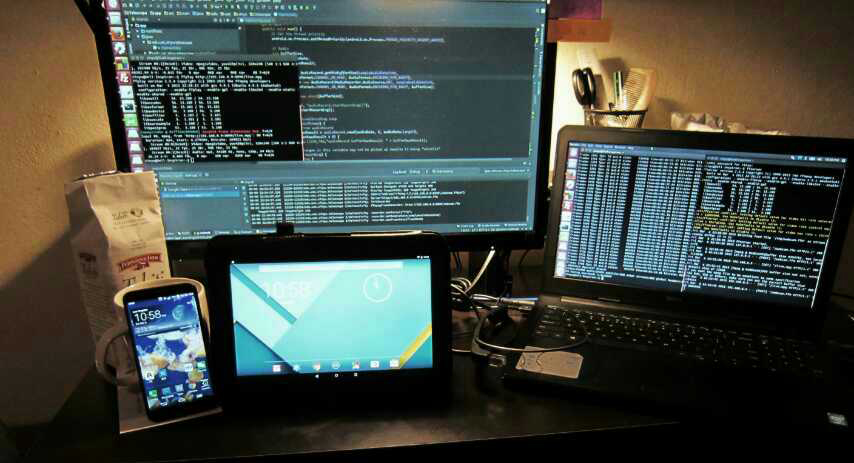
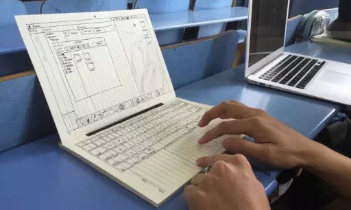

10分钟带你了解合工大软件学院
向上滑动翻页
软件学院怎么样啊？
软件工程专业过去属于计算机学院，09年学校为响应国家大力发展软件产业的号召，才独立出来成为“软件学院”。根据 2015 年的数据，合工大的软件工程专业在全国 400 多所同类院校中排名第 68 位，和西安电子科技大学不相上下。合工大是 211 院校，虽然一只脚跨进了 985，但毕竟还不是，面对清北交浙等顶级高校终究只能仰望，但好赖也是一本院校，对过一本线但分数不高的小伙伴来说还是个非常不错的选择。
哦对了，这里所说的“学院”跟“系”是等价的，是正宗的一本专业，并不是专科或者成教。
多少分能进啊？
上图是软件学院成立以来每一年在安徽省的录取分数线，上面一条是学院的线，下面一条是理科一本线。可以看出两条线之间的距离在逐年拉大，今年安徽省理科一本线暴涨到 555 分，结合往年情况，预计至少要 600 分以上才有希望进。
由于各省的高考总分不同，这里仅以安徽省为例，其它省份的数据可以点下面的按钮查询。
点此查询合肥校区历年分数线软件学院有多少人？男女比多少？
软件学院成立于 09 年，现有 3 届毕业生。每个年级分 2 个班共 80+人，放眼全校，我们在人数上并不占优势，但人少也有好处，日常生活根本不分班级和年级，就像一家子。
软件学院的男女比例在 6:1 和 13:1 之间徘徊（人口基数少，每多一个女生数字就会有很大不同），往年情况如上图所示，蓝色表示男生，红色表示女生。狼多肉少的情况在工科专业里非常普遍，急需改观。
同学们都来自哪里
合工大地处安徽，自然是安徽本地生源最多，占据了近六分之一，江苏、浙江分列二、三，其余各省均有分布，迄今为止除了西藏和港澳台地区，全国所有省份都有我们软件的小伙伴。
至于安徽本地的生源，来自合肥的自然是最多，安庆、阜阳、六安、芜湖紧随其后占领前5，几乎每个城市都有人。
软件学院在哪个校区

合工大目前主要有 3 个校区：位于合肥的本部（俗称“老区”或“南区”）、翡翠湖校区（俗称“新区”），以及位于宣城的宣城校区（2011 年投建，2012 年开始招生）。咱们软件学院 4 年都在翡翠湖校区。
学院办公室（简称“院办”）位于翡翠湖校区的图书馆，从图书馆北面“软件学院”四个鲜红的大字右边那个门进去，右手边就是了。新生报到当天每个人必去的一个地方。
要不要自己带电脑？
电脑最好自己带。虽然学院有机房，但总有不方便的时候。开学就可以带，但不急着用，来了再买也行。专业对电脑配置并没有什么特殊的要求，主流价位的笔记本都能满足学业所需，长期考虑的话可以在CPU和内存上多花点钱，会是一笔非常值得的投资，当然如果你出身富贵人家想买 Macbook 或是 Alienware，我们也不拦着。
学院现有两个机房，坐标图书馆，专供本院学生使用。这对于学霸们来说是个很不错的资源，自习不用占座，夏天和冬天还有空调。机房电脑的配置还算不错：四核 CPU，2G 内存，40G 硬盘，入门级显卡，不带光驱，可以上网。
毕业生出路怎么样？
09级有去到 Google、思科、华为、讯飞、巨人等名企的。考研有去科大、浙大、中科院的。出国的也有，一个去了PSU，一个去了USC。
10级在腾讯、网易、迅雷、去哪儿等处都有人。考研党去了北大、北航、上交、复旦、同济、港中文。留学族现已占领英、美、日等国。
11级进驻了讯飞、恒生、启云等公司。考研党去了北大、复旦、中科大、哈工大等
应届生起薪受地域影响差别很大，从 4K-10K+ 都有，平均 5K。
软件工程都学点啥

软件工程专业，是以计算机科学与技术为基础，强调软件开发的工程性的一门学科。目前属于工学一级学科，是计算机学科的分支。本科 4 年，并设有研究生点和博士点。我们主要学习的编程语言是 C++ 和 Java，高年级会学 C#、汇编等语言，但并不做重点。专业课方面，除了数据结构、组成原理、操作系统、计算机网络、数据库、离散数学等计算机学科的必修课，还有需求分析、软件构造、软件测试、软件过程管理等软件工程专业特有的的课程。当然这只是一部分学科基础，难免会有些过时，时下流行的技术需要你自己去探索。
我从来没写过代码，能学会吗？
放心，绝大部分人都是从零基础起步的，只有极少数人是有底子的，上课会从最基础的开始讲。除了平常上课，院学生会和院科创中心还经常会安排学长学姐开展技术培训和考前指导，因此完全不用担心跟不上。
如果你想在暑假里先提前预习起来，可以加入我们的新生群，这里有不少学长学姐们，可以根据你的兴趣帮你选择一些适合的东西带你入门。
学费好贵啊！

软件工程专业的学费相比其他专业要贵不少，这不仅是合工大，全国高校都这样。这个问题一直以来都是饱受争议的。一方面企业外聘教师、国外教学内容的进口版权、校企合作实习等都比较费钱。另一方面兴办软件学院是国家的政策，允许学校按实际成本收费。
学费高，但来的并不都是富家子弟，事实上有一半的同学都申请了助学金或是助学贷款，学校还有各种补贴，奖学金也很丰厚，因此只要认真学习、注意节约，费用的问题学校能帮你解决不少。
开学有摸底考试吗
摸底考试并没有，但会有一个英语的分班测试，高考难度，有听力，通常安排在军训第一周的周末，用于给大家安排英语课的教学班。
考完会根据成绩把大家分成一级和二级。二级类似于快班，比一级提前一个学期结课，大一下学期就可以参加英语四级考试，而一级要到大二上学期才可以。除此之外，两个级别并没有什么本质区别，因此不用太担心，正常发挥就好。
学生会 - 回忆甜过初恋

软件学院的学生会成立于 09 年，与学院同时成立，是学院三大学生组织之一。像各种比赛、晚会、交流会、运动会等活动都是学生会在负责。
学生活动是大学文化的重要组成部分，不管是组织还是参与，如果完全没有体验过的话，你的大学生活是不完整的，你总不希望等毕业之后回忆自己的大学生活，除了书本就再没其他了吧。
科创中心 - 大神请你来

大学生科技与创新中心（简称“科创中心”），同样成立于 09 年，软件学院三大学生组织之一。是学习与交流专业技术的理想平台。
科创中心最出名的活动要数技术培训，会请一些学霸和技术帝来给大家讲课，非常值得一听。科创中心自发成立了LUG（Linux User Group），致力于 Linux 的推广。今年新成立了创新基地，是做项目攒经验的不二之选。
微爱社 - 小而暖的爱
软件学院青年志愿者联合会，名叫“微爱社”，软件学院三大学生组织之一，成立于 2012 年，是学院目前最年轻的学生组织。
微爱社有好多非常有影响力的活动：例如“美丽校园”系列活动，不定期去到校园各处清理顽固垃圾。再比如“下乡支教”，与合肥市桃花工业小学合作开展定向支教。除此之外还有结合专业特色的计算机免费维护服务、计算机二级考前辅导等实用活动。